10 部片单 · 恐怖 / 科幻 / 惊悚 / 悬疑 / 剧情
| # | 片名 | 类型 | 评分 / 状态 |
|---|---|---|---|
| 01 | 蝴蝶效应 | 科幻 / 悬疑 / 惊悚 | 8.9 / 33% / 7.6 |
| 02 | 万能钥匙 | 恐怖 / 悬疑 / 惊悚 | 8.0 / 38% / 6.5 |
| 03 | 新世界 | 犯罪 / 悬疑 / 惊悚（韩国） | 8.9 / 7.5 / 63% |
| 04 | 机械师 | 惊悚 / 心理 / 悬疑 | 7.6 / 77% / 7.6 |
| 05 | 恐怖直播 | 惊悚 / 犯罪 / 悬疑（韩国） | 8.7 / 7.1 / 560 万人次 |
| 06 | 局内人 | 犯罪 / 惊悚 / 悬疑 | 8.1 / 86% 认证新鲜 / 7.6 |
| 07 | 时空恋旅人 | 科幻 / 剧情 / 爱情 | 8.7 / 71% / 7.8 |
| 08 | 走到尽头 | 犯罪 / 惊悚 / 黑色喜剧（韩国） | 8.0 / 82% / 76 |
| 09 | 蔷花红莲 | 恐怖 / 心理 / 悬疑（韩国） | 7.2 / 80% / 7.1 |
| 10 | 独立日 | 科幻 / 动作 / 灾难 | 8.1 / 69% / 7.0 |
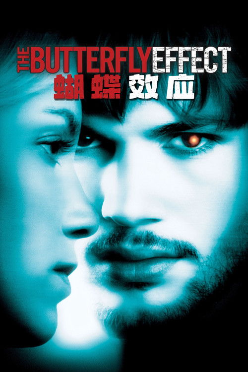
蝴蝶效应 The Butterfly Effect
他发现自己能回到童年，改写记忆里的那一刻。然后一切都更糟了。
剧情梗概
伊万是个被黑色童年记忆纠缠的年轻人，靠写日记勉强把记忆钉在原处。一次偶然，他发现只要读起过去的日记，意识就会回到那个年纪的身体里，让他有机会改正当时做错的事——阻止母亲的车祸、留住初恋、救回儿时的玩伴。可每一次修改都像推倒第一块多米诺：他改好一处，另一处就崩塌，现实被重写成他认不出的样子。直到他翻到最后一页关于自己出生的日记。
亮点
- 埃里克·布雷斯与 J·麦基·格鲁伯联合编导，两人本行是化学工程博士，写剧本半路出家——这是他们的长片处女作。
- 片名直接取自混沌学里的「蝴蝶效应」：一只蝴蝶扇动翅膀，可以在远方引发风暴；影片把这条理论拍成了个人命运。
- 阿什顿·库彻为贴合角色憔悴感减重并剃掉标志性络腮胡，造型几乎让当时的粉丝认不出。
- 影片有四个不同结局（院线版、两个导演剪辑版、DVD 版），其中「出生前自我了断」的版本最暗，被列为仅 DVD 收录。
- 成本约 1300 万美元、全球票房约 9680 万，是 2004 年回报率极高的黑马惊悚片。
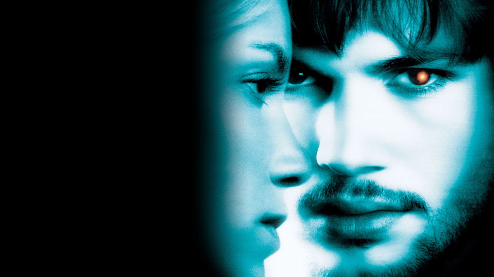
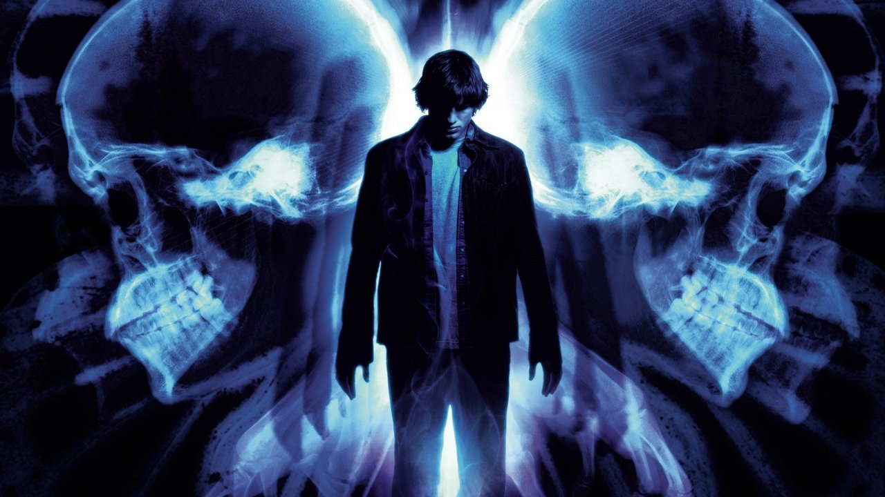
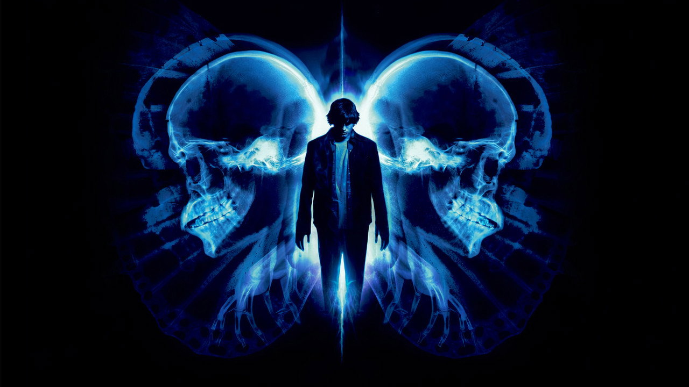
导演与主创 · 他们的历史作品
 死神来了2
死神来了2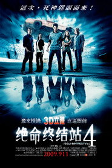
死神来了4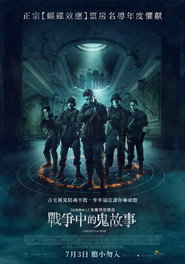
战争幽灵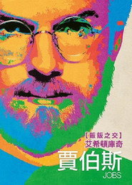
乔布斯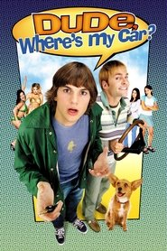
猪头，我的车咧？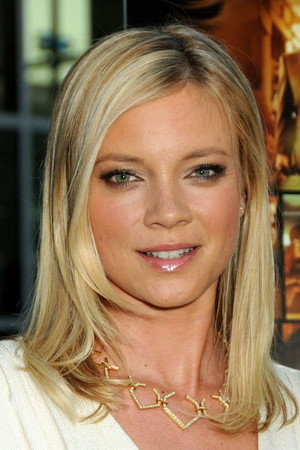
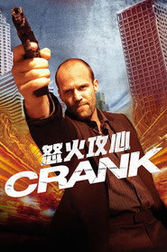
怒火攻心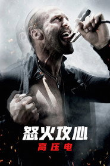
怒火攻心2：高压电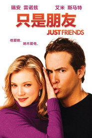
只是朋友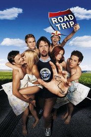
哈啦上路短评（轻微剧透）
《蝴蝶效应》真正让人后背发凉的不是穿越机制，是它那句没说出口的前提——你以为你想改的是「那件事」，其实你想改的是「你自己」。布雷斯把童年创伤拍得很具体：地下室、母亲的男友、被针线缝住的嘴，这些画面不是用来吓人，是用来说明「一个人是从哪一刻开始学不会安全的」。影片聪明在它不给你爽感：每一次伊万改写记忆，观众也跟着松一口气，然后立刻被更糟的现实扇回来。它最被低估的一点是结构——它的循环不是科幻设定，是心理，把人对「如果当初」的执念具象成能重来的按钮，结果证明重来只会暴露你根本不知道自己要什么。缺点要诚实：逻辑在后段开始撑不住，几个转折靠硬巧合；烂番茄只有 33%，是因为影评人普遍嫌它「残酷得没有意义」。但国内豆瓣 8.9 说明它在普通观众里触发了很真实的共鸣——那种「我也想回到某天」的念头，它接住了。轻微剧透：真正的终点不是他救下了谁，而是他意识到自己从一开始就不该存在，于是选择回到还没出生时。
为什么值得一看
喜欢《恐怖游轮》《源代码》《彗星来的那一夜》这种「时间可以重来但代价惊人」的观众；对童年创伤、命运、选择这类母题有共鸣的人。含几段写实向的童年暴力与心理压迫（R 级），不适合低龄与极度怕黑者。内地未引进，流媒体可看。
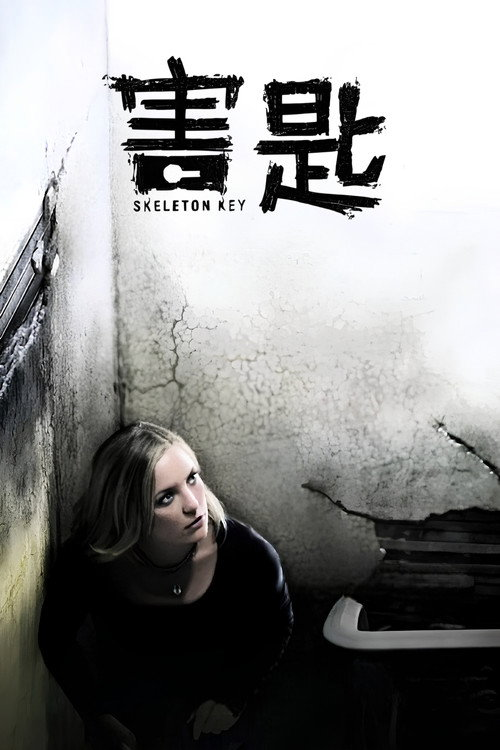
万能钥匙 The Skeleton Key
那栋老宅里有扇门，死活打不开。钥匙她终于拿到了，却没问清楚门后面是什么。
剧情梗概
护士卡洛琳受雇去新奥尔良郊外一座衰败的庄园，照顾中风瘫痪的老主人本。本的妻子维奥莱特把一柄造型古怪的「万能钥匙」交给她，说它能开庄园里每一道门——唯独阁楼那扇不行。卡洛琳的好奇心压过了警告，她潜入阁楼，发现了关于 Hoodoo（伏都旁支）巫术的笔记与仪式。随着她越陷越深，她发现这房子里每个人都藏着一层又一层的谎。
亮点
- 伊恩·索夫特利执导，他此前拍过《K星异客》《墨水心》，擅长把「普通人误入异界」拍得克制而阴冷。
- 故事核心的 Hoodoo 是真实存在的美国南方民间信仰（区别于 Voodoo），影片请了民俗顾问把关仪式细节。
- 凯特·哈德森一反《十日拍拖手册》里的甜心形象，全程素颜、神经紧绷，是这个角色需要的「不信邪却被拖垮」的气质。
- 全片在新奥尔良实地拍摄，那座庄园是真实存在的老宅，潮湿、霉味、木楼梯的声响都是实景收录。
- 结局的反转由编剧 Ehren Kruger 设计，曾因过于冷酷在试映后被反复讨论。
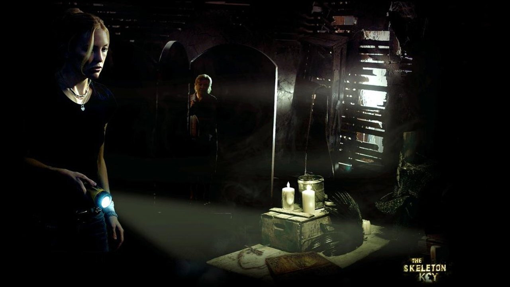
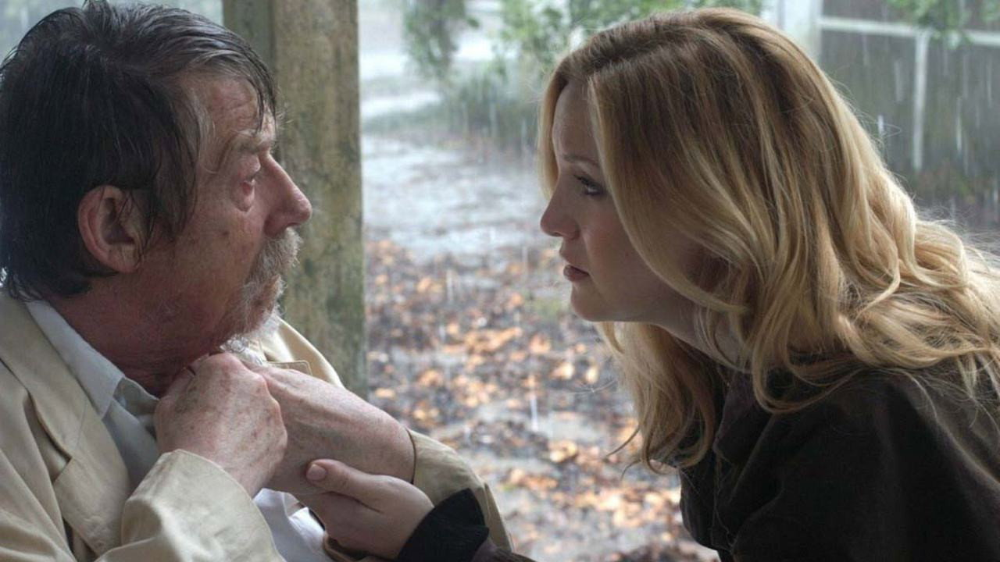
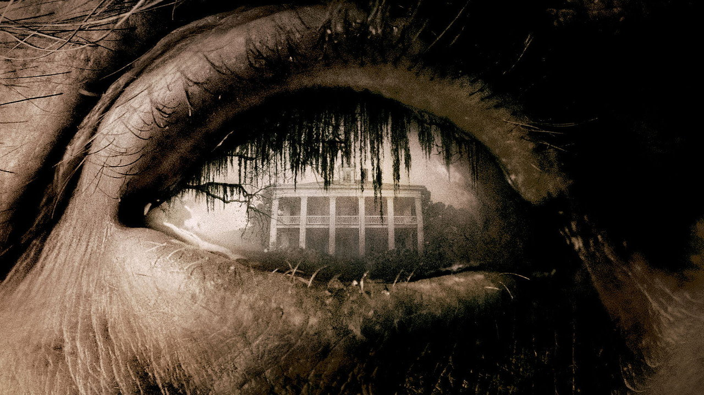
导演与主创 · 他们的历史作品
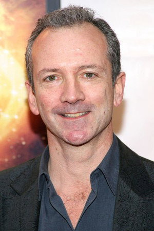
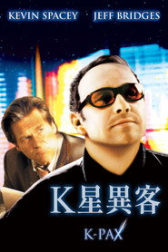
K星异客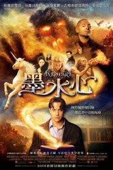
墨水心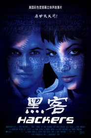
黑客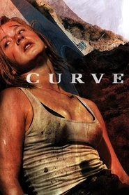
搭车遇狼惊魂记 利刃出鞘2：抽丝剥茧
利刃出鞘2：抽丝剥茧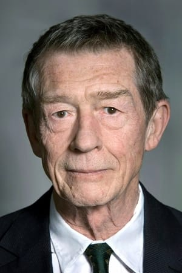
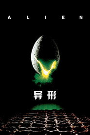
异形 V字仇杀队
V字仇杀队 雪国列车
雪国列车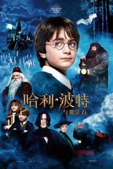
哈利·波特与魔法石短评（轻微剧透）
《万能钥匙》是那种「前半段把你喂得很饱、最后一口却噎住」的恐怖片。索夫特利最大的本事是让你相信这栋房子是活的——不是鬼，是某种更古老、更不讲理的东西在木头缝里慢慢渗出来。它最好的一点在于它尊重观众的好奇心：卡洛琳越界，你希望她越；她打开那扇门，你也屏住呼吸，这种「共谋感」是它比一般 Jump scare 片高级的地方。但必须说实话：它的结尾是教科书级的「聪明反被聪明误」——反转很巧，代价是它把前面建立的所有情感基础都推倒了，只留下一个纯粹的恶作剧式震惊。所以烂番茄 38%、Metacritic 47 不是冤枉它，影评人讨厌的就是这种「玩弄观众」的收尾。可它在中国豆瓣有 8.0，因为它确实把「信任」这件事拍出了寒意，那种「你以为你在救人，其实你签了字」的无力感很真实。轻微剧透：钥匙从来不是用来开门的，是用来「同意」的——一旦你说出口，就没有收回的余地。
为什么值得一看
喜欢《哭声》《无名女尸》这类「民俗恐怖 + 心理博弈」的观众；能接受慢热、靠气氛而非血浆制造恐惧的人。PG-13，暴力程度有限，但心理压迫较强。内地未引进。
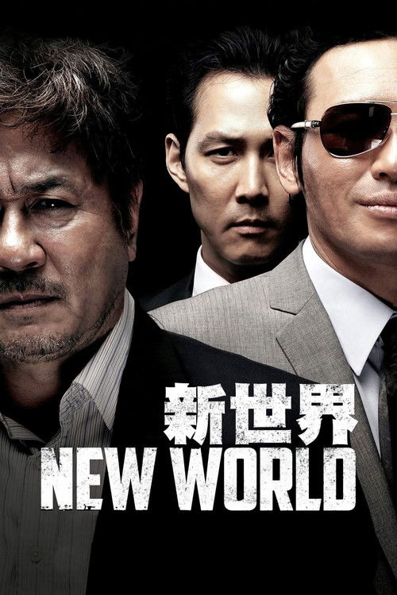
新世界 New World
他在警队卧底十年，却连自己到底是谁都快忘了。
剧情梗概
李子成是警方的深度卧底，在黑帮「金门」里熬了八年，做到了二当家的左右手。他的联系人一次次被调走、被害，他得到的只有一句「再忍忍」。与此同时，黑帮内部的权力交接即将开始，新会长的人选在丁青与后继者之间摇摆。一桩突如其来的命案把李子成推到悬崖边——他必须证明自己的忠诚，却不知警察与黑帮究竟谁更想让他死。
亮点
- 朴勋政自编自导，此前是编剧；本片是他转型导演的里程碑，用极致的黑暗与权力感奠定了「韩式黑帮史诗」的又一高峰。
- 影片被广泛视为对《无间道》的韩国式重写，但把格局从「双雄」拉成了「组织与个人」的吞噬关系。
- 崔岷植饰丁青、李政宰饰李子成，两人在饭桌上的几场对手戏被影迷反复拉片，是全片最封神的部分。
- 全片几乎没有女性角色，所有情感张力都压在男人之间的忠诚、背叛与依存上。
- 韩国观影人次约 470 万，拿下当年大钟奖、青龙奖多项表演与技术奖。
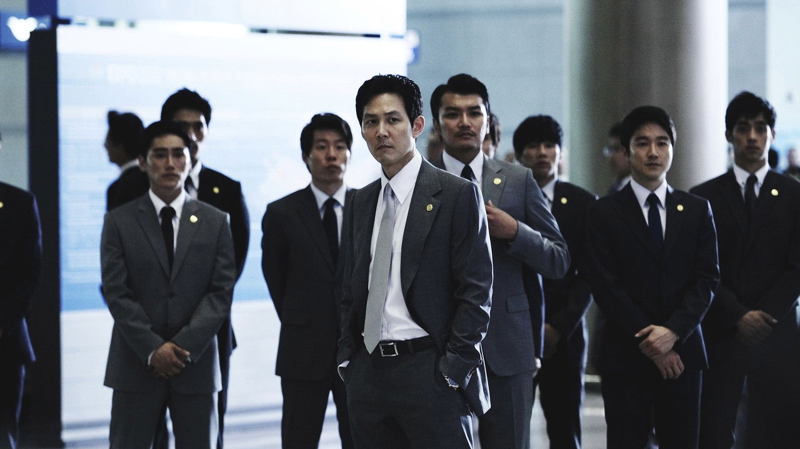
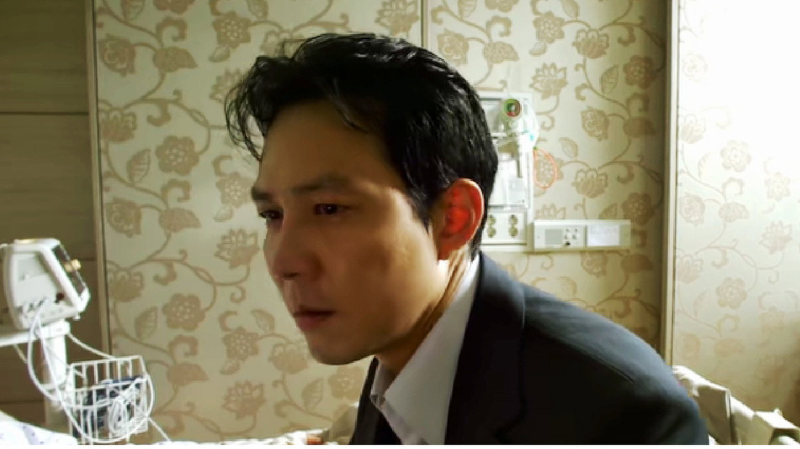
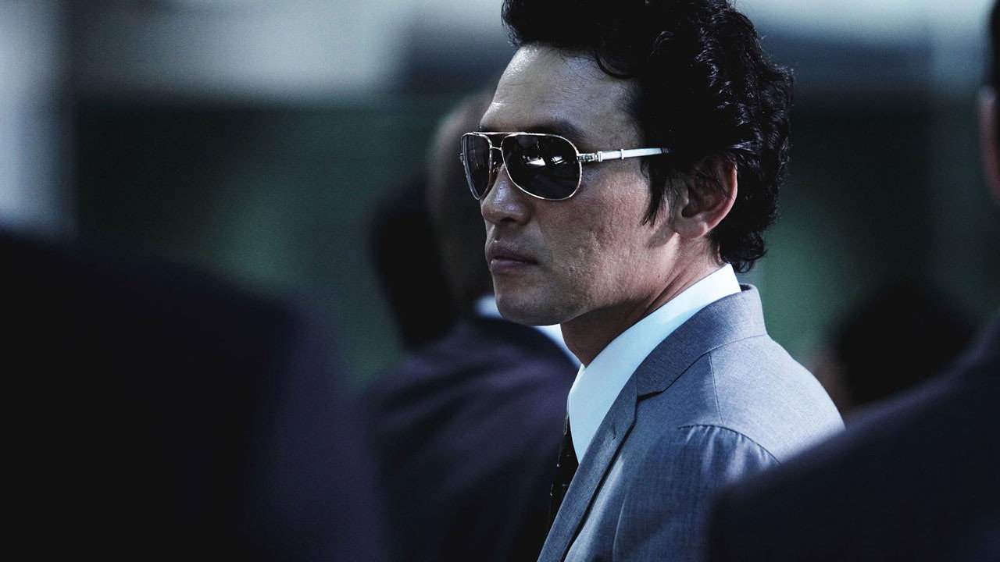
导演与主创 · 他们的历史作品
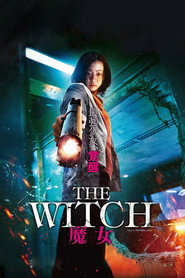
魔女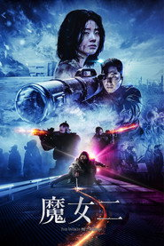
魔女2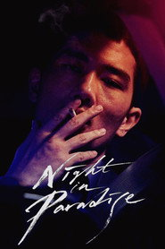
乐园之夜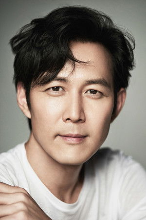
 与神同行：罪与罚
与神同行：罪与罚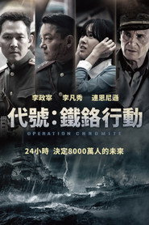
仁川登陆作战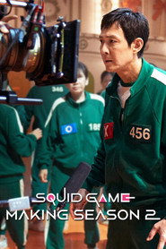
鱿鱼游戏： 第二季 制作特辑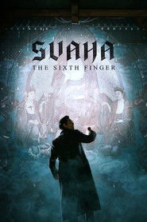
娑婆诃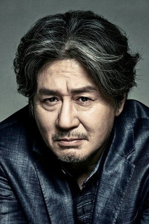
 老男孩
老男孩 超体
超体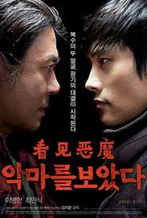
看见恶魔 亲切的金子
亲切的金子短评（轻微剧透）
《新世界》最狠的一笔，是它把「卧底」拍成了一种慢性病。李子成不是《无间道》里那个随时会被拆穿的警探，他是一个已经被黑帮喂大、连笑点和底线都和兄弟一致的人。所以影片真正的问题不是「他会不会暴露」，而是「他还想不想回去」。朴勋政聪明地让丁青成为全片最动人的角色——一个明知对方是警察、却选择用最笨拙的方式护着他的黑帮二当家。那场「我当会长你就安全了」的对话，是全片的分水岭：从那一刻起，兄弟情和生存本能再也分不开。技术上说，它把黑帮片的仪式感（饭局、手枪、电梯）拍得像宗教。缺点也得讲：后段节奏偏满，部分转折靠巧合；烂番茄 63% 说明海外观众对它的「慢火炖权力」不太买账。但豆瓣 8.9 不虚——它把「人在系统中被磨掉自己」这件事讲透了。轻微剧透：结局没有洗白，李子成走的那步棋，是把所有人（包括警察）都当成了筹码。
为什么值得一看
喜欢《老男孩》《看见恶魔》《局内人》这类「组织吞噬个人」的黑色犯罪片观众；对韩式表演、饭桌对手戏、权力博弈有偏好的人。含大量暴力与黑帮血腥（19 禁），敏感者慎入。内地未引进。
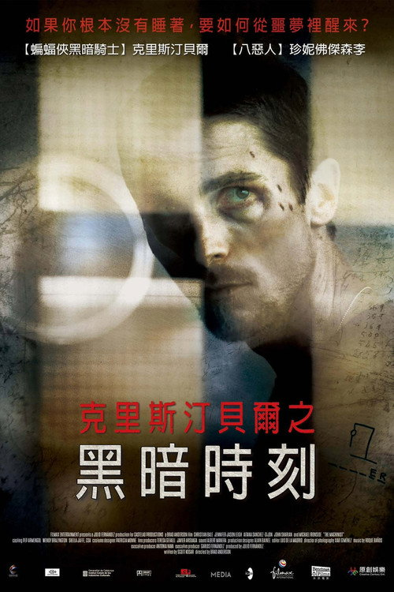
机械师 The Machinist
他一年没睡。瘦到脱形，却说不清到底是什么在追他。
剧情梗概
特雷弗在工厂上夜班，已经整整一年没合过眼。他瘦得只剩一把骨头，靠咖啡和尼古丁撑着，连同事都躲着他。他开始收到一张张写着「机器零件 271」的匿名纸条，工厂里也屡屡出现本不该有的事故。一个叫伊万的对象在暗处操纵着什么，而特雷弗唯一能抓住的线索，是他无论如何都想不起来的那个夜晚——那晚到底发生了什么，让他变成了现在这副样子。
亮点
- 布拉德·安德森执导，本片是他最著名的作品，用极致的消瘦与冷色调把「失眠的偏执」拍成了实体。
- 克里斯蒂安·贝尔为角色减重到约 55 公斤（121 磅），形销骨立的体型本身就是叙事的一部分；他后来在《机械师》角色方法上成了业内传说。
- 影片配乐与色调刻意压到低饱和的青灰，让整部片像泡在一缸冷水里。
- 故事结构是一则现代寓言：它借「一年不睡」的极端状态，讲一个人如何用遗忘来逃离罪疚。
- 成本仅约 500 万美元，是典型的小成本心理惊悚，靠表演和氛围取胜。
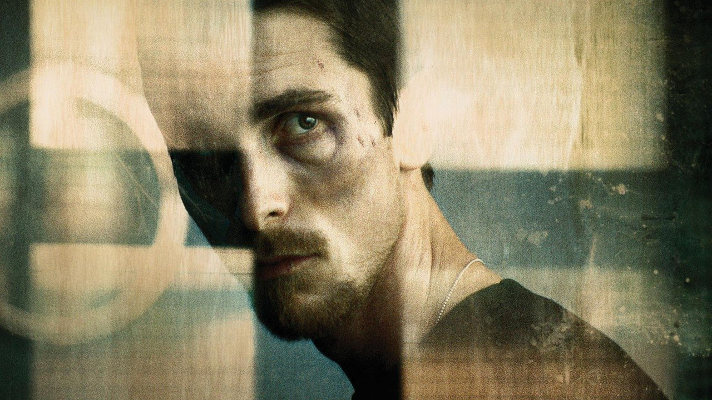
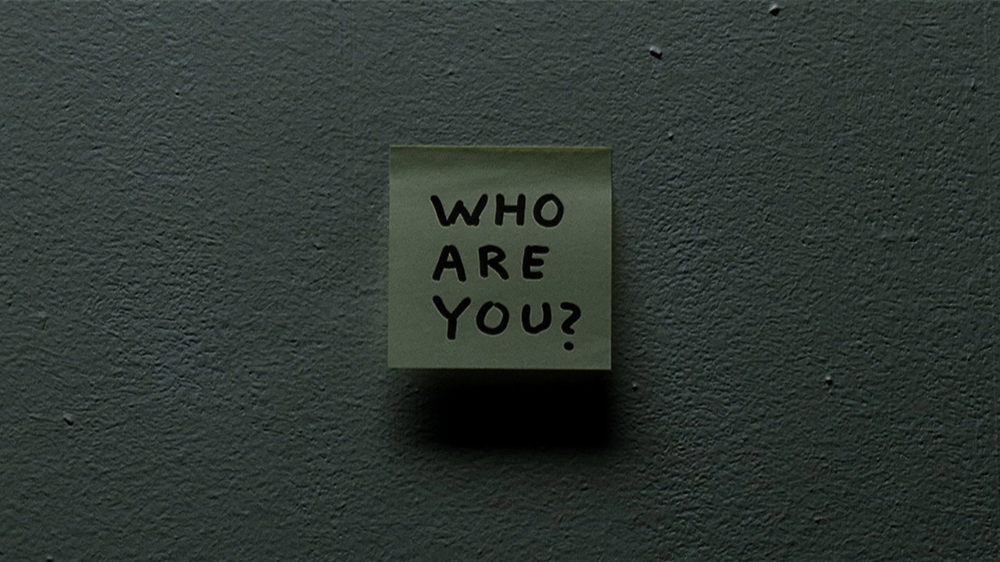
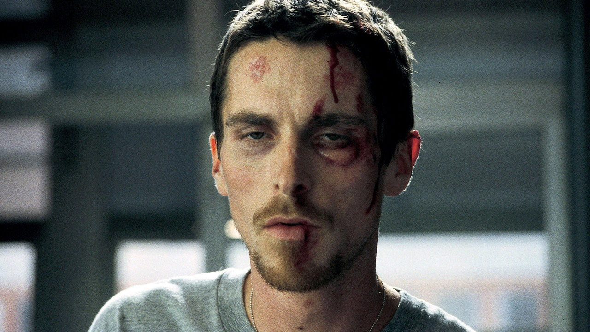
导演与主创 · 他们的历史作品
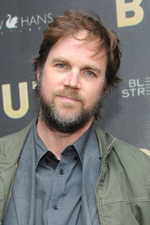
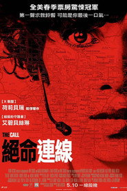
致命呼叫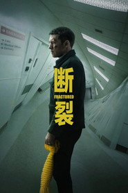
断裂
 蝙蝠侠：黑暗骑士
蝙蝠侠：黑暗骑士 蝙蝠侠：黑暗骑士崛起
蝙蝠侠：黑暗骑士崛起 蝙蝠侠：侠影之谜
蝙蝠侠：侠影之谜 美国精神病人
美国精神病人
 八恶人
八恶人 湮灭
湮灭 感官游戏
感官游戏 失常
失常短评（轻微剧透）
《机械师》是一部把「罪疚」具象成失眠的电影，而且它不打算治愈你。贝尔的表演是影片的全部地基——他不是一个「演得很瘦」的演员，他让你相信这个人已经忘记了自己还是个人。安德森最聪明的一点是他从不急着告诉你答案，那些匿名纸条、工厂事故、忽明忽暗的同事，都像长期缺觉后脑子里真实的噪音。它真正讲的不是悬疑，是「一个人可以对自己隐瞒到什么程度」：特雷弗记得一切，唯独记得的那件事他选择不记得。技术层面，冷青色的影调和那种永远湿漉漉的夜，把偏执拍得有触感。缺点要诚实：中段节奏略拖，部分线索铺得过于刻意；Metacritic 61 说明它不算影评人的宠儿。但它胜在「纯粹」——不像很多心理惊悚那样故弄玄虚，它只想让你陪一个人熬到天亮。轻微剧透：那场车祸的真相，才是他一年没睡的真正原因；而「伊万」从来不是别人。
为什么值得一看
喜欢《记忆碎片》《禁闭岛》《消失的爱人》这种「记忆不可信」的心理悬疑观众；能接受慢节奏、重度心理压迫与极度消瘦画面的人（R 级，含写实车祸与自残暗示）。内地未引进。
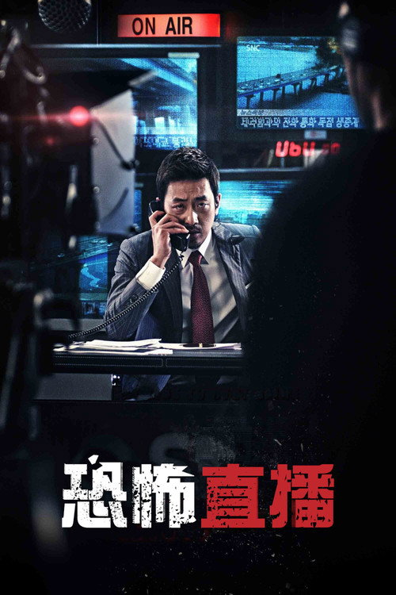
恐怖直播 The Terror Live
一通直播电话，一座桥，一个被困在播音室的主持人。90 分钟，没有一分钟松手。
剧情梗概
毒舌广播主持人尹英华在直播中接到一通听众来电，对方声称在汉江大桥上安装了炸弹，除非政府满足他的条件。节目被切断，但英华偷偷把通话转到手机上继续直播——收听率瞬间爆炸。随着谈判推进，他发现对方要的远不止钱，而自己正被一步步逼成事件的中心。整场戏几乎发生在一间狭小的播音室里，但紧张感像焊死在屏幕上。
亮点
- 金秉宇自编自导，影片几乎一镜到底，是韩国电影工业在「实时密闭惊悚」上的技术标杆。
- 河正宇同时担任主演与编剧之一，他饰演的尹英华一边直播一边博弈，是全片唯一的「在场者」。
- 全片时长约 97 分钟，与外部「实时」几乎同步，剪辑刻意不给你喘息。
- 汉江大桥、广播电台、政府危机应对中心三条线平行推进，靠声音与画面交叉制造压迫。
- 韩国观影人次约 560 万，是当年暑期档的黑马，拿下多个影评人协会最佳剧本奖。
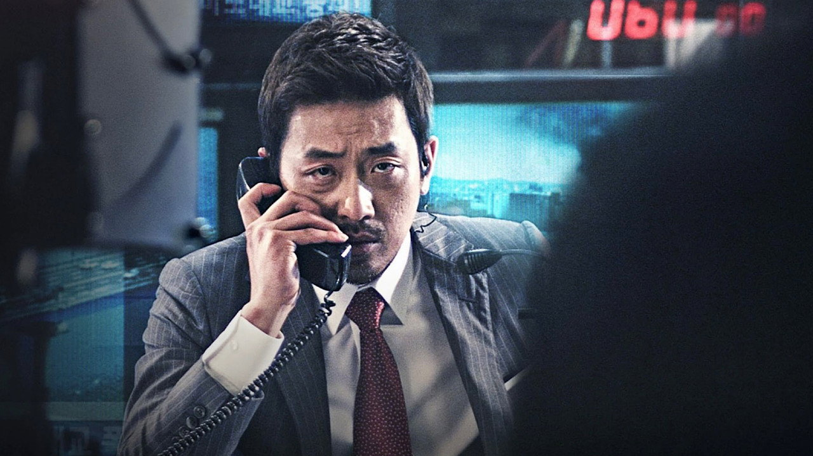
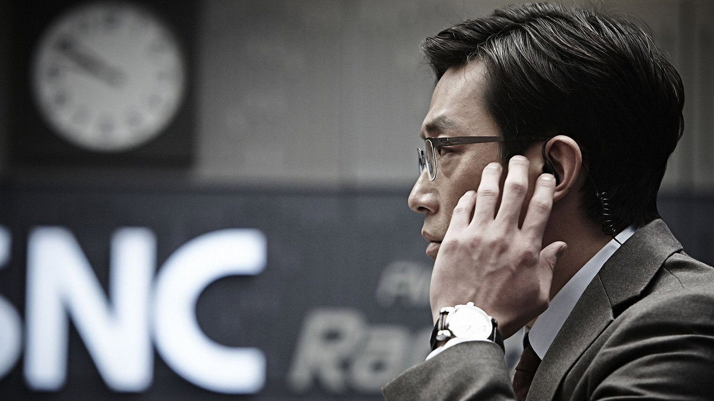
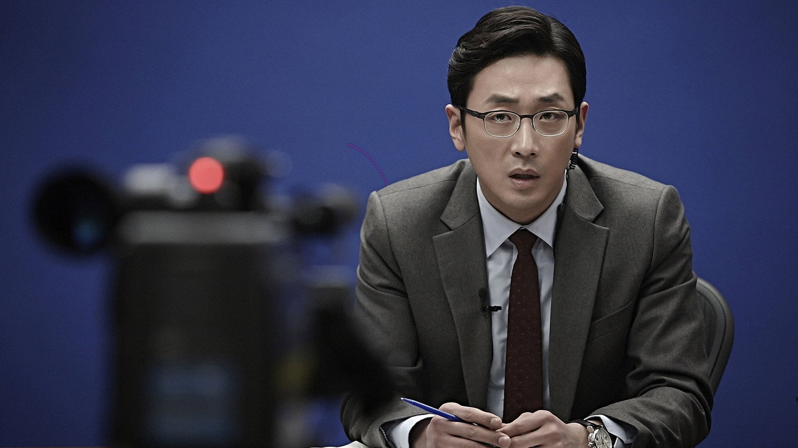
导演与主创 · 他们的历史作品
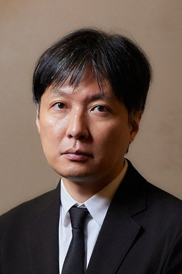

 小姐与神同行：罪与罚
小姐与神同行：罪与罚 追击者
追击者 与神同行2：因与缘
与神同行2：因与缘 潘多拉与神同行：罪与罚与神同行2：因与缘
潘多拉与神同行：罪与罚与神同行2：因与缘短评（轻微剧透）
《恐怖直播》最了不起的地方是它把格局做小而把张力做满。一部几乎不发生在一间屋子外的电影，却能让人手心出汗，靠的是金秉宇把「实时」这件事焊死在了叙事里——你不只是在看一个故事，你是在和主角一起被时间追着跑。河正宇的表演是发动机的活塞：他油滑、怯懦、又在不该硬的时候硬起来，让这个自私的主持人既讨厌又让人忍不住替他揪心。影片真正高级的是它没把反派拍成疯子，对方要的东西有清晰的来由，于是这场博弈从「抓坏人」升格成了「谁该为那座桥负责」的公共质问。缺点也要讲：后段为了收束把部分逻辑简化了，个别反转略显仓促；它对媒体与权力的讽刺，有些人会觉得过于直接。但豆瓣 8.7 说明它把「爽感与思考」的平衡拿捏住了。轻微剧透：最后那声爆炸不是终点，是英华终于替那个被困在系统里的人，说出了一句本该早就有人说的话。
为什么值得一看
喜欢《狙击电话亭》《活埋》《科洛弗道10号》这种「单场景密闭高压」惊悚的观众；对媒体、权力、真相博弈有兴趣的人。节奏极快、几乎无尿点（15 禁，含爆炸与纪实向暴力）。内地未引进。
局内人 Inside Man
一群人走进银行，说要抢钱。可等到警察把整栋楼围起来，没人说得清他们到底要什么。
剧情梗概
曼哈顿一家银行被一伙训练有素的劫匪占领，带头的人叫达尔顿·罗素，西装笔挺、谈吐优雅，看起来一点都不像坏人。谈判专家弗雷泽警探被叫到现场，却发现对方要的既不是钱、也不是人质安全——每一条要求都像在故意把警方引入某个更深的地方。随着对峙展开，银行里的人一个接一个暴露出「不是看上去那样」，而真正的局，从开门那一刻就已经布好了。
亮点
- 斯派克·李执导，他把一出银行劫案拍成了一场关于种族、阶级与身份认同的客厅博弈。
- 丹泽尔·华盛顿饰达尔顿·罗素，影评人盛赞其「用礼貌当武器的表演」，是影片气场的绝对核心。
- 影片大量使用李标志性的「人物正对镜头独白」，把观众直接拉进劫匪与警探的心理角力。
- 剧本由李与 Richard Price 打磨，群戏层次密，几乎每个配角都藏着一条反转线。
- 烂番茄 86%、认证新鲜（Certified Fresh），是斯派克·李商业口碑最稳的一次。
导演与主创 · 他们的历史作品
 黑色党徒
黑色党徒
 伸冤人
伸冤人 训练日
训练日 迫降航班
迫降航班
 人类之子
人类之子 罪恶之城
罪恶之城 亚瑟王
亚瑟王 星际特工：千星之城
星际特工：千星之城短评（轻微剧透）
《局内人》最好玩的地方是它一直在骗你「这是一部劫案片」。斯派克·李用曼哈顿银行的水晶吊灯和西装革履，把类型片的外壳擦得锃亮，然后慢慢把里面掏空，换上他真正想聊的东西：谁在这座城市里被看见、谁永远不被看见。丹泽尔·华盛顿的达尔顿·罗素是全片最迷人的存在——他从不慌，因为他手里握着的不是枪，是信息差，是「我知道你在想什么，而你还不知道我在想什么」。影片真正的对手戏不是劫匪对警察，是体制对自身漏洞的遮掩。技术上说，李用饱和的暖色与密集的剪辑把一场围困拍出了歌剧感。缺点要诚实：片长 129 分钟、信息密度高，第一次看容易在几处闪回里丢线；结尾的「大揭底」对部分观众来说略显说教。但整体仍是顶级群戏惊悚。轻微剧透：银行从一开始就不是目标，真正被「抢」走的是一桩被掩埋的丑闻。
为什么值得一看
喜欢《盗火线》《十一罗汉》《看不见的客人》这类「高智商博弈 + 群像反转」的观众；对纽约都市犯罪、体制黑幕有兴趣的人。含枪战与写实暴力（R 级）。内地未引进。
时空恋旅人 About Time
他们家的男人，到 21 岁就能回到过去。他拿它追女孩，后来才懂得该用它留住什么。
剧情梗概
蒂姆从小被告知：他们家的男性有个秘密——只要钻进黑暗的壁橱，就能回到自己经历过的任意时刻，重新来过。21 岁那年，他决定用这个能力去追回爱情，于是他遇见了玛丽。可随着日子推进，他发现穿越能改的只是瞬间，改不了失去：父亲的衰老、孩子的降临、那些一旦过去就再也抓不住的平凡时刻。他最终学会的不是「重来」，而是「把这一次过好」。
亮点
- 理查德·柯蒂斯编剧并执导，他写过《真爱至上》《诺丁山》《BJ单身日记》，本片是他把时间旅行拍成「过日子」的温柔尝试。
- 多姆纳尔·格里森饰蒂姆，蕾切尔·麦克亚当斯饰玛丽，两人的化学反应是影片的情感发动机。
- 影片的时间规则很克制：只能回到自己经历过的时刻，且每次穿越会覆盖「现在」，避免了传统科幻的无限开挂。
- 父亲（比尔·奈伊饰）那条线是全片最催泪的部分，把「时间旅行」最终落回了「陪伴」二字。
- 基调是柯蒂斯招牌的英式温情，但比《真爱至上》更私密、更靠近死亡与告别。
导演与主创 · 他们的历史作品
 真爱至上
真爱至上 诺丁山
诺丁山 BJ单身日记
BJ单身日记 机械姬
机械姬 荒野猎人
荒野猎人 星球大战7：原力觉醒
星球大战7：原力觉醒 奇异博士
奇异博士 恋恋笔记本
恋恋笔记本 大侦探福尔摩斯
大侦探福尔摩斯短评（轻微剧透）
《时空恋旅人》很容易被误读成一部甜腻的恋爱片，但它真正想讲的是另一件事：我们总以为「重来一次」能解决遗憾，可大多数遗憾根本不是某个瞬间选错了，而是时间本身在流走。柯蒂斯聪明地把科幻设定压到最低——没有敌人、没有崩坏的世界，只有壁橱、黑暗和一句「回到你经历过的那天」。于是穿越变成了一种练习：蒂姆一次次重来，终于明白该珍惜的不是某个完美时刻，而是那些他本来想跳过的平凡日子。影片最有力的一笔是父亲那条线，它把「时间旅行」从浪漫道具变成了面对死亡的准备。缺点要说清：它实在太「柯蒂斯」了，喜欢的人觉得暖，反感的人会觉得鸡汤；Metacritic 55、烂番茄 71% 说明影评人普遍认为它软。但豆瓣 8.7 证明它在普通人心里是真的被接住了。轻微剧透：结尾蒂姆不再穿越，因为他终于懂得——把这一次过好，就是对时间最好的回应。
为什么值得一看
喜欢《真爱至上》《她》《这个男人来自地球》这类「软科幻 + 情感」的观众；想看一部温柔、不烧脑、但后劲不小的电影的人。含少量性与粗口（12A / R 级）。内地未引进。
走到尽头 A Hard Day
刑警的一天：先撞死人藏尸，再发现死者是案子里的关键，然后黑帮老大坐进了他的审讯室。
剧情梗概
刑警高建洙在母亲葬礼当天疲于奔命，开车时迷糊撞死了一个路人，慌乱中把尸体塞进后备箱打算天黑处理。回到警局，他得知自己正在查的案子里，死者正是他刚撞死的那个人。更糟的是，一名黑帮老大因为另一起案子被带进审讯室——而建洙的后备箱里，还躺着对方的「生意伙伴」。接下来 24 小时，建洙要在办案、藏尸、应付上级与黑帮之间走钢丝，每一步都踩在崩盘边缘。
亮点
- 金成勋自编自导，把「倒霉的一天」推到荒诞极致，是韩式黑色犯罪里节奏最利落的一部。
- 李善均饰高建洙，把一个被生活反复碾压却还要硬撑的刑警演得既狼狈又可爱。
- 全片几乎由一场接一场的「巧合对撞」驱动，剧本结构像精密的发条。
- 赵震雄饰黑帮老大，与建洙在警局里演了一出「谁先露怯」的对手戏，是全片最高光的拉扯。
- 烂番茄 82%、Metacritic 76，是当年韩影在海外口碑最稳的惊悚片之一。
导演与主创 · 他们的历史作品
 王国：北方的阿信
王国：北方的阿信
 寄生虫
寄生虫 寂静计划
寂静计划 眠
眠 恶霸警察小姐
恶霸警察小姐短评（轻微剧透）
《走到尽头》是一部把「倒霉」拍成动作的电影。金成勋的剧本像一台上紧了发条的机器：建洙每解决一个问题，就蹦出两个更大的问题，而你作为观众明知他在作死，却忍不住替他数着还有几分钟崩盘。它最好的一点是不假装深刻——它就是一场酣畅的、越陷越深的狼狈逃窜，黑帮、尸体、上级、亲人全被卷进同一天，荒诞得让人笑出声又替他捏汗。李善均的表演是关键，他让这个刑警既窝囊又讨喜，你恨不得隔着屏幕摇他肩膀。技术上说，它把密闭空间（车、审讯室、走廊）的调度玩出了花，几乎没有冷场。缺点要诚实：后段为了收线，部分反转靠巧合堆积；对「真实感」较真的观众会觉得它太顺滑。但作为爽感惊悚，它完成度极高。轻微剧透：结尾那场「警局里的默契」没有谁赢，只是两个人各自把秘密咽了回去，继续演下去。
为什么值得一看
喜欢《新世界》《走到尽头》同类韩式黑色犯罪、以及《疯狂的石头》式巧合链条的观众；想要「一口气看完、笑中带紧张」的人（15 禁，含撞车、藏尸与黑帮暴力，但处理得克制）。内地未引进。
蔷花红莲 A Tale of Two Sisters
妹妹说继母要杀她。姐姐说你又在胡思乱想。可这栋老宅里，墙会呼吸。
剧情梗概
秀晶从精神病院回家，和妹妹美仙、父亲以及年轻的继母一起住进湖边那栋老宅。美仙坚信继母在用巫术害自己，秀晶一面安抚妹妹，一面被这座房子里的异样拉回童年的记忆——母亲是怎么死的、那场大火、以及自己到底忘了什么。随着现实与幻觉的边界越来越糊，姐妹俩的关系也滑向一个谁都不愿意面对的真相。
亮点
- 金知云执导，本片是他早期代表作，把韩式心理恐怖的美学（潮湿、长走廊、白衣、咒语）立住了。
- 林秀晶饰秀晶、文根英饰美仙，两位女演员当时都极年轻，却撑起了极其沉重的心理戏。
- 影片是《蔷花，红莲》——片名取自韩国著名民间恐怖童谣，本身就带着诅咒的意味。
- 全片用大量对称构图与红色调暗示「分裂」，几乎每一帧都在暗示记忆的不可靠。
- 是朴赞郁《 joint security area》之后韩国恐怖片出海的代表作之一，影响了后来一大批东亚心理恐怖。
导演与主创 · 他们的历史作品
 好家伙、坏家伙、怪家伙
好家伙、坏家伙、怪家伙短评（轻微剧透）
《蔷花红莲》是一部「用美来吓你」的电影。金知云没有靠怪物或血浆，他靠的是那栋老宅本身的呼吸感——潮湿的木地板、半开的门、继母旗袍上的暗红、姐妹俩在走廊里越来越远的背影。它最好的一点是它让你始终站在「该信谁」的悬崖上：美仙说继母下咒，秀晶说你又在幻想，而镜头偏偏在两个版本之间暧昧地摇摆。这种不可靠叙事把恐怖从「外部」搬进了「记忆内部」，比 jump scare 高级得多。缺点必须讲：它节奏很慢、意象密，第一次看很容易在大量象征里迷路；豆瓣 7.2 相对偏低，正是因为不少观众觉得它「看得累、看不懂」。但看懂的那一刻，它的后劲极长。轻微剧透：整座房子、继母、甚至妹妹，可能都是秀晶在创伤后为自己搭起来的——而那个最可怕的画面，是她始终不肯承认的那场火灾的真相。
为什么值得一看
喜欢《哭声》《昆池岩》《穆赫兰道》这类「心理 / 民俗恐怖 + 不可靠叙事」的观众；能接受慢节奏、重意象、开放式解读的人（15 禁，含心理惊吓与火灾暗示）。内地未引进。
独立日 Independence Day
7 月 4 日，外星舰队遮住了太阳。人类的回答是：把电脑病毒插进母舰。
剧情梗概
1996 年夏天，人类第一次确认自己不是宇宙里唯一的智慧生命——因为一群巨大的飞船停在了每一座主要城市的上空。倒计时结束后，它们用一道光把地标夷为平地。在幸存者里，王牌飞行员史蒂文·希勒、电缆工出身的美国总统、以及天才科学家大卫·莱文森各自走上了不同的路，最终汇成同一个计划：利用捕获的外星设备，把一枚电脑病毒送进母舰，关掉它们的防护罩，再一鼓作气反击。
亮点
- 罗兰·艾默里奇执导，本片是他把「灾难 + 科幻 + 团圆」三件套拍成暑假大片的模板，后来《2012》《后天》都沿这条线。
- 威尔·史密斯饰飞行员史蒂文·希勒，这是他成为一线巨星的突破口，那句「Welcome to Earth」成了时代梗。
- 影片砸掉了白宫、帝国大厦、洛杉矶天际线，单是实体模型与微缩爆破的预算就创当时纪录。
- 比尔·普尔曼饰美国总统，在反攻前夜那段「7 月 4 日演讲」是美式主旋律最被反复引用的段落之一。
- 拿下第 69 届奥斯卡最佳视觉效果奖，全球票房约 8.17 亿美元，是 1996 年最卖座电影。
导演与主创 · 他们的历史作品

 2012
2012 独立日2：卷土重来
独立日2：卷土重来 惊天危机
惊天危机 X特遣队
X特遣队 我是传奇
我是传奇
 侏罗纪公园2：失落的世界
侏罗纪公园2：失落的世界 侏罗纪公园
侏罗纪公园 雷神3：诸神黄昏
雷神3：诸神黄昏短评（轻微剧透）
《独立日》是那种你明知道它「不科学」却还是会在影院里起立鼓掌的电影。艾默里奇的野心从来不是写实，而是把「人类被逼到墙角然后团结反咬一口」这件事拍到最爽——白宫炸掉、城市烧起来、总统亲自坐进战机，每一帧都在替观众出一口「被碾压」的恶气。它真正有效的地方是节奏：前半段铺绝望，中段给希望，最后那枚病毒插进母舰的瞬间，是全人类的爽点大爆发。威尔·史密斯在这里完成了从喜剧演员到动作巨星的跃迁，那种「一边耍嘴皮一边揍外星人」的松弛感，后来被无数大片抄了二十年。缺点要说清：人物是标签化的（硬汉、书呆子、领袖），逻辑经不起推敲，烂番茄 69%、Metacritic 59 说明影评人对它的「幼稚」并不买账。但豆瓣 8.1、8 亿多美元票房证明：在「暑假大片」这个品类里，它几乎定义了标准答案。轻微剧透：人类赢不是靠更强的武器，是靠大卫那句「现在这是我们擅长的」——用对方的操作系统打败对方。
为什么值得一看
喜欢《2012》《后天》《世界末日》这类「全球灾难 + 大团圆反击」爆米花大片的观众；想看一次毫无包袱、纯粹热血的科幻动作的人。PG-13，含大量灾难与战斗场面但血腥极低，适合阖家观看。内地曾于 1996 年公映，如今各流媒体可看。